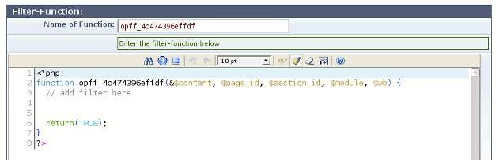
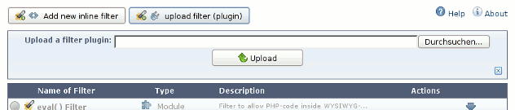

Admin-Tool (de)
| Admin-Tool (de) | |
| Admin-Tool | |
| Admin-Tool Übersicht | In der Filter-Übersicht werden alle installiertien Filter angezeigt, gruppiert nach Typ des Filters. |
| Filter exportieren | Benutzen Sie das “Exportieren”-Icon in der Filter-Übersicht, um einen vorhandenen Inline- oder Plugin-Filter zu exportieren. |
| Filter Installieren | Um einen neuen Inline-Filter zu installieren, klicken Sie einfach den “Neuen Inline-Filter hinzufügen”-Schaltfläche an, und geben Sie die Daten des Filters in das Formular auf der folgenden Seite ein. |
Admin-Tool Übersicht
In der Filter-Übersicht werden alle installiertien Filter angezeigt, gruppiert nach Typ des Filters. Die Reihenfolge in der Liste entspricht dabei der Reihenfolge, in der die Filter angewendet werden.
Aktiv/Inaktiv:
Das Icon vor dem Namen zeigt an, ob der Filter aktiv (grün) oder inaktiv (grau) ist. Inaktive Filter werden nicht ausgeführt. Klicken Sie das Icon an, um den Zustand umzuschalten.
Name:
Der Name des Filters.
Klicken Sie den Namen an, um auf die Filter-Einstellungen Seite zu gelangen.
Typ:
Der Typ des Filters. Es gibt Inline-Filter, Plugin-Filter oder Modul-Filter. Durch Klicken auf das Symbol können Sie zwischen Inline- und Plugin-Filtern umschalten. Einige Meta-Informationen (z.B. Versionsnummer und Autor eines Plugin-Filters) gehen dabei verloren.
Beschreibung:
Eine kurze Beschreibung.
Aktionen:
| Fragezeichen | (optional) Die Hilfeseiten des Filters öffnen. |
| Werkzeug | (optional) Die erweiterten Einstellungen des Filters öffnen. |
| Schriftrolle | (optional) Den CSS-Editor des Filters öffnen. |
| Pfeil hoch | Filter nach oben verschieben. |
| Pfeil runter | Filter nach unten verschieben. |
| Löschen | Filter löschen (nur Inline- und Plugin-Filter). |
| Exportieren | Filter exportieren (nur Inline- and Plugin-Filter). |
Filter Installieren
Inline-Filter installieren
Um einen neuen Inline-Filter zu installieren, klicken Sie einfach den “Neuen Inline-Filter hinzufügen”-Schaltfläche an, und geben Sie die Daten des Filters in das Formular auf der folgenden Seite ein.

| Name des Filters | Name des neuen Filters. Jeder Filter muß einen eigenen, eindeutigen Namen haben. |
| Beschreibung | Ein beschreibender Text für den Filter oder die Funktion. |
| Typ | Typ des Filters. Legt fest, auf welche Ausgabe der Filter angewendet wird. Siehe weiter unten. |
| Filter auf diese Module anwenden | Wählen Sie hier die Module aus, auf die der Filter angewendet werden soll. Bitte bachten Sie, daß hier per default “Alle Module” ausgewählt ist. Sie sollten die Auswahl auf die Module beschränken, für die der Filter tatsächlich gedacht ist. |
| Filter auf diese Seiten anwenden | Wählen Sie hier die Seiten aus, auf die der Filter angewendet werden soll. Bitte bachten Sie, daß hier per default “Alle Seiten” ausgewählt ist. Sie können die Auswahl auf die Seiten beschränken, für die der Filter tatsächlich gedacht ist. |
| Name der Funktion | Name der Haupt-Funktion dieses Filters. Dies muß der gleiche Name sein, wie unten in dem Text-Eingabebereich. Dieser Name muß eindeutig sein, kein anderer Filter darf den gleichen Namen verwenden. Es ist daher am sichersten den vorgegebenen Namen zu verwenden. |
Filter-Typen:
| Modul | Filter vom Typ “Modul” werden direkt auf die Ausgabe von Modulen angewendet, also auf die Ausgabe der Datei view.php des Modules. |
| Modul (zuletzt) | Filter dieses Types verhalten sich wie “Modul”, werden aber erst nach allen Filtern vom Typ “Modul” ausgeführt. |
| Seite | Filter vom Typ “Seite” werden auf die Ausgabe der kompletten Seite angewendet, dies umfast das HTML des Templates (<head>, <body>), die Menüs, Snippets und alle Module auf dieser Seite. |
| Seite (zuletzt) | Filter dieses Types verhalten sich wie “Seite”, werden aber erst nach allen Filtern vom Typ “Seite” ausgeführt. |
Filter auf Module und Seiten anwenden:
Benutzen Sie die “Filter auf diese Module/Seiten anwenden”-Baumansicht um den Filter auf bestimmte Module oder Seiten zu beschränken. Auf diese Weise muß der Filter nicht für jede Seite ausgeführt werden, sondern nur da, wo er tatsächlich benötigt wird.
Beispiele:
- Um einen Filter vom Typ “Modul” auf alle WYSIWYG-Abschnitte auf allen Seiten anzuwenden, wählen Sie “WYSIWYG” in der Modul-Baumansicht, und “Alle Seiten” in der Seiten-Baumansicht.
- Um den selben Filter auf WYSIWYG- und News-Abschnitte anzuwenden, aber nur auf den Seiten “Intro” und “First Page” anzuwenden, wählen Sie “WYSIWYG” in der Modul-Baumansicht, und “Intro” und “First Page” in der Seiten-Baumansicht.
- Das folgende Bild zeigt die Einstellungen um den Filter auf WYSIWYG-Abschnitte auf den Seiten “Intro”, “First Page”, “Page 1”, “Page 2”, und auf einer oder mehreren Unterseiten der Seite “Description” anzuwenden.

Ab OpF Version 1.5 und WBCE 1.2 ist es auch möglich, Filter aufs Backend anzuwenden. Wenn die WB-Version Backend-Filtering unterstützt, erscheinen die entsprechenden Backend-Module ebenfalls in der Baumansicht der Module. Wenn man in einem solchen Filter, der aufs Backend wirkt, einen Fehler hat, kann es sein, dass das Backend nicht mehr zugänglich ist. In diesem Fall kann das Backend-Filtering komplett deaktiviert werden, indem die folgende Zeile zur globalen config.php von WBCE hinzugefügt wird:
define('WB_OPF_BE_OFF', 'off');| Der Wert ist dabei egal | sobald eine Konstante mit diesem Namen definiert ist, wird das Backend nicht mehr gefiltert und Sie haben wieder Zugang, um den Filter zu korrigieren. |
Die Filter-Funktion:
Um die Filter-Funktion einzugeben benutzen Sie den Editor.
Parameter der Funktion:
| &$content | (String) Der Inhalt des Modules oder der Seite, Übergeben per Referenz. Änderungen an dieser Variable ändern direkt die Ausgabe. |
| $page_id | (Int) Die actuelle page_id der Seite. |
| $section_id | (int/Bool) Die aktuelle section_id des Abschnittes. Bei Filtern vom Typ “Seite” ist dieser Wert immer FALSE. |
| $module | (String/Bool) Name des aktuellen Modules. Bei Filtern vom Typ “Seite” ist dieser Wert immer FALSE. |
| $wb | Eine Instanz der Klasse wb. |
Rückgabewert:
Die Filter-Funktion muß FALSE zurückgeben, wenn im Falle eines Fehlers der Inhalt von $content möglicherweise beschädigt ist.
In allen anderen Fällen muß die Funktion TRUE zurückgeben.
Wie schreibt man eine eigene Filter-Funktion:
Sehen Sie Filter functions.
Plugin-Filter installieren
Um Plugin-Filter zu installieren, klicken sie die “Plugin-Filter hochladen”-Schaltfläche an, und benutzen Sie das dann erscheinende Formular um einen Filter zu installieren.
Modul-Filter installieren
Modul-Filter werden als Teil eines anderen Modules installiert, daher gibt es dafür keine eigene Methode.